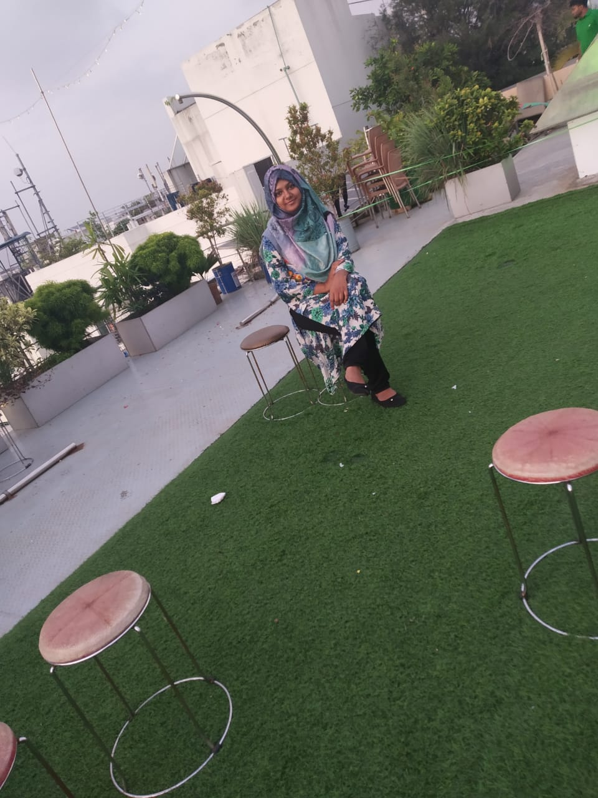
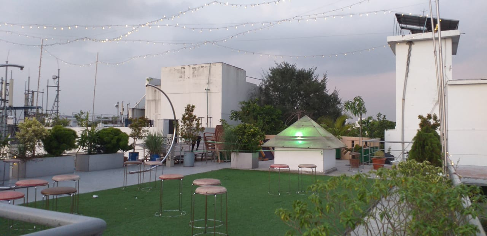
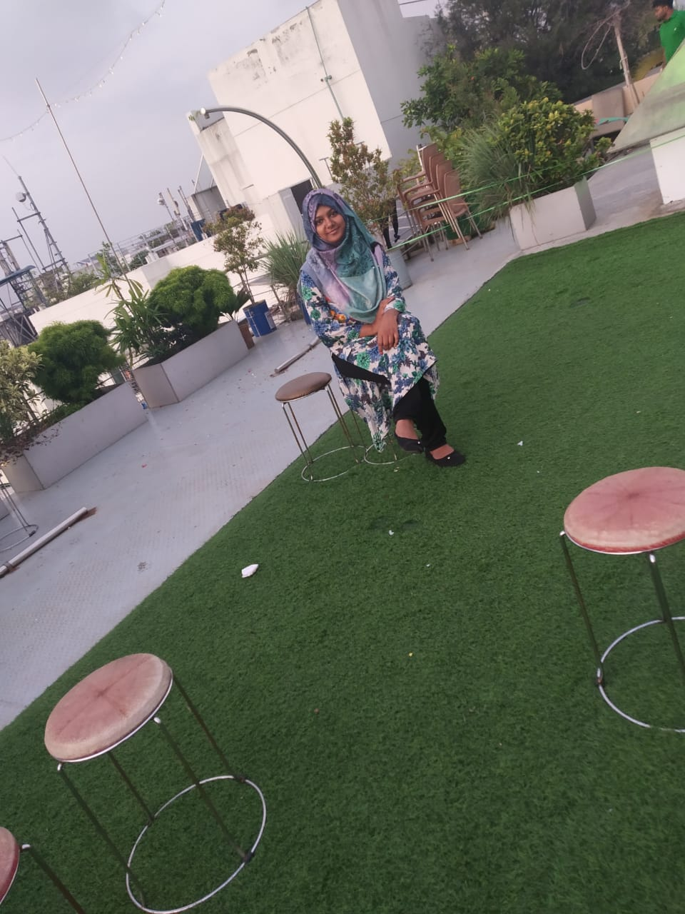
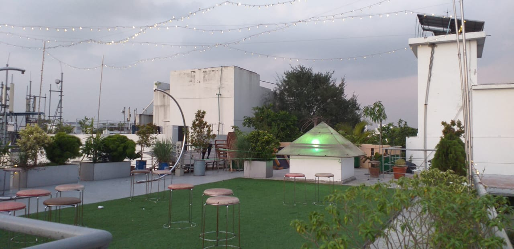

Bangladesh, to the east of India on the Bay of Bengal, is a South Asian country marked by lush greenery and many waterways. Its Padma (Ganges), Meghna and Jamuna rivers create fertile plains, and travel by boat is common. On the southern coast, the Sundarbans, an enormous mangrove forest shared with Eastern India, is home to the royal Bengal tiger .
 



News is Upto date